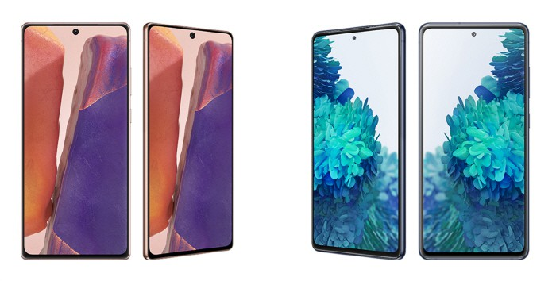
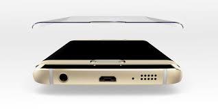

 Flat display
플랫 디스플레이는 엣지 디스플레이와 다르게 그냥 일반적인 평평한 화면이다. 삼성은 s6 엣지 모델부터 s20까지 플래그십 스마트폰엔 모두 엣지가 들어갔지만 s21에는 플랫 디스플레이가 들어갔다. 초기 엣지는 굴곡이 심해 오터치와 손에서 쉽게 떨어뜨릴수 있었는데 엣지 디스플레이가 적용된 화면의 수리비가 플랫에 비해 몇배씩 차이가 났다. 점차 엣지의 필요성에 의문을 가진 사용자들이 많아졌고 삼성은 s21 울트라를 제외한 s21,s21+모델에 플랫 디스플레이를 적용했다.
 Edge display
플렉시블 디스플레이의 일종으로 디스플레이의 모서리에 곡률을 주어 휘게 한 디스플레이다. Edge는 엣지가 아니라 에지이므로 에지 디스플레이라고 불러야 맞지만 대중적으로 엣지라고 부르다 보니 표현이 그렇게 굳어졌다. 삼성전자가 2014년 9월에 공개한 안드로이드 스마트폰인 갤럭시 노트 엣지에서 최초로 선보였다. 삼성디스플레이의 플렉시블 디스플레이를 탑재하고 있으며 이미 기존에 삼성전자에 패널을 공급해 출시되었던 갤럭시 라운드나 LG디스플레이가 LG전자에 패널을 공급했던 LG G Flex와는 다르게 전면은 평면으로 이루어져있으며 측면에만 곡률을 준 것이 특징이다. 세계 최초로 디스플레이를 상용화한 삼성전자의 가이드라인에 따르면 커브드(curved), 벤디드(bended), 폴더블(foldable), 롤러블(rollable), 스트레처블(stretchable) 등의 순으로 이어지는 플렉시블 디스플레이 기술 단계의 2단계인 벤디드 디스플레이에 속하는 디스플레이다. 엣지 디스플레이를 비롯한 플렉시블 디스플레이의 근본기술은 AMOLED다. AMOLED 패널 소자는 깨지지 않는 유기 다이오드로 구성되어 있어 패널에 상처를 내지 않고도 자유자재로 형태를 변화시킬 수 있기 때문에 엣지 디스플레이의 생산에 매우 적합하며, 디스플레이 패널과 터치 스크린 패널을 분리하여 따로 제작할 수도 있으므로 대량생산에 유리한 특징이 있다. 2016년 1분기 기준 삼성전자의 자회사 삼성디스플레이가 전세계 중소형 AMOLED 시장의 97.9%를 점유한 경쟁없는 단독 시장을 형성하는 가운데, 삼성전자가 CES 2013의 삼성 프레스 컴퍼런스 @ CES 2013에서 엣지 디스플레이의 프로토타입 기기를 YOUM(윰) 디스플레이의 공개와 함께 공개하였다. 초기에는 실용성이 강조되어 엣지 디스플레이와 평면 디스플레이의 조작 환경이 분리되어 태스크를 수행하는 방식이었으나 점점 평면 디스플레이와 다른 엣지 디스플레이 특유의 심미성에 집중하여 평면 디스플레이와 동일한 기능을 수행하되 보기에 더 좋다는 평가를 받게 되었다. 다만 이는 엣지 디스플레이의 기능성이 보편화가 될 만큼 유용하지 못하다는 의미기도 하다. 곡률을 준 부분을 '엣지 스크린'이라 지칭하며 이 부분에다 전용 사용자 인터페이스를 적용할 수 있다. 삼성전자는 엣지 스크린을 위한 SDK를 공개하기도 했다. 처음에는 한쪽 측면에만 엣지 스크린을 적용하였으나, 왼손잡이를 배려하지 않았다는 비판이 나온 이후 양면 엣지 스크린이 적용된 엣지 디스플레이를 탑재한 갤럭시 S6 엣지를 시작으로, 양면 엣지 디스플레이 탑재 스마트폰을 매년 출시하고 있다. 디스플레이 특성상 구라베젤이 없다는 장점도 있다. 그러나 노트9와 S10 시리즈의 경우 좌우 베젤이 제법 생겼다.